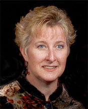
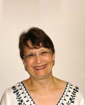
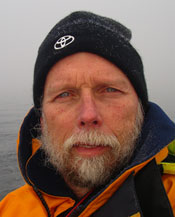

Board of Directors
Pulin Anil Shah, M.D.
| David Dance, M.D.
| Justin StormoGipson, M.D.
|
Julie Crandall, R.N.
|  Rosemary "Mary" Sibulsky, R.N.
|  Ms. Karen Sines
|
Edward T. Riley, M.D. |
Patrick Parden, M.D. |
 William Bell |
Indigenous Scholarship Fund
Kenna StormoGipson |